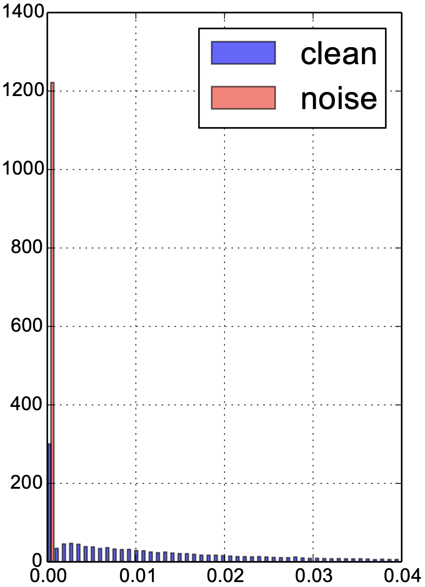

Learning to Reweight Examples for Robust Deep Learning
Abstract
Deep neural networks have been shown to be very powerful modeling tools for many supervised learning tasks involving complex input patterns. However, they can also easily overfit to training set biases and label noises. In addition to various regularizers, example reweighting algorithms are popular solutions to these problems, but they require careful tuning of additional hyperparameters, such as example mining schedules and regularization hyperparameters. In contrast to past reweighting methods, which typically consist of functions of the cost value of each example, in this work we propose a novel meta-learning algorithm that learns to assign weights to training examples based on their gradient directions. To determine the example weights, our method performs a meta gradient descent step on the current mini-batch example weights (which are initialized from zero) to minimize the loss on a clean unbiased validation set. Our proposed method can be easily implemented on any type of deep network, does not require any additional hyperparameter tuning, and achieves impressive performance on class imbalance and corrupted label problems where only a small amount of clean validation data is available.
1 Introduction
Deep neural networks (DNNs) have been widely used for machine learning applications due to their powerful capacity for modeling complex input patterns. Despite their success, it has been shown that DNNs are prone to training set biases, i.e. the training set is drawn from a joint distribution that is different from the distribution of the evaluation set. This distribution mismatch could have many different forms. Class imbalance in the training set is a very common example. In applications such as object detection in the context of autonomous driving, the vast majority of the training data is composed of standard vehicles but models also need to recognize rarely seen classes such as emergency vehicles or animals with very high accuracy. This will sometime lead to biased training models that do not perform well in practice.
Another popular type of training set bias is label noise. To train a reasonable supervised deep model, we ideally need a large dataset with high-quality labels, which require many passes of expensive human quality assurance (QA). Although coarse labels are cheap and of high availability, the presence of noise will hurt the model performance, e.g. Zhang et al. (2017) has shown that a standard CNN can fit any ratio of label flipping noise in the training set and eventually leads to poor generalization performance.
Training set biases and misspecification can sometimes be addressed with dataset resampling (Chawla et al., 2002), i.e. choosing the correct proportion of labels to train a network on, or more generally by assigning a weight to each example and minimizing a weighted training loss. The example weights are typically calculated based on the training loss, as in many classical algorithms such as AdaBoost (Freund and Schapire, 1997), hard negative mining (Malisiewicz et al., 2011), self-paced learning (Kumar et al., 2010), and other more recent work (Chang et al., 2017; Jiang et al., 2017).
However, there exist two contradicting ideas in training loss based approaches. In noisy label problems, we prefer examples with smaller training losses as they are more likely to be clean images; yet in class imbalance problems, algorithms such as hard negative mining (Malisiewicz et al., 2011) prioritize examples with higher training loss since they are more likely to be the minority class. In cases when the training set is both imbalanced and noisy, these existing methods would have the wrong model assumptions. In fact, without a proper definition of an unbiased test set, solving the training set bias problem is inherently ill-defined. As the model cannot distinguish the right from the wrong, stronger regularization can usually work surprisingly well in certain synthetic noise settings. Here we argue that in order to learn general forms of training set biases, it is necessary to have a small unbiased validation to guide training. It is actually not uncommon to construct a dataset with two parts - one relatively small but very accurately labeled, and another massive but coarsely labeled. Coarse labels can come from inexpensive crowdsourcing services or weakly supervised data (Cordts et al., 2016; Russakovsky et al., 2015; Chen and Gupta, 2015).
Different from existing training loss based approaches, we follow a meta-learning paradigm and model the most basic assumption instead: the best example weighting should minimize the loss of a set of unbiased clean validation examples that are consistent with the evaluation procedure. Traditionally, validation is performed at the end of training, which can be prohibitively expensive if we treat the example weights as some hyperparameters to optimize; to circumvent this, we perform validation at every training iteration to dynamically determine the example weights of the current batch. Towards this goal, we propose an online reweighting method that leverages an additional small validation set and adaptively assigns importance weights to examples in every iteration. We experiment with both class imbalance and corrupted label problems and find that our approach significantly increases the robustness to training set biases.
2 Related Work
The idea of weighting each training example has been well studied in the literature. Importance sampling (Kahn and Marshall, 1953), a classical method in statistics, assigns weights to samples in order to match one distribution to another. Boosting algorithms such as AdaBoost (Freund and Schapire, 1997), select harder examples to train subsequent classifiers. Similarly, hard example mining (Malisiewicz et al., 2011), downsamples the majority class and exploits the most difficult examples. Focal loss (Lin et al., 2017) adds a soft weighting scheme that emphasizes harder examples.
Hard examples are not always preferred in the presence of outliers and noise processes. Robust loss estimators typically downweigh examples with high loss. In self-paced learning (Kumar et al., 2010), example weights are obtained through optimizing the weighted training loss encouraging learning easier examples first. In each step, the learning algorithm jointly solves a mixed integer program that iterates optimizing over model parameters and binary example weights. Various regularization terms on the example weights have since been proposed to prevent overfitting and trivial solutions of assigning weights to be all zeros (Kumar et al., 2010; Ma et al., 2017; Jiang et al., 2015). Wang et al. (2017) proposed a Bayesian method that infers the example weights as latent variables. More recently, Jiang et al. (2017) proposed to use a meta-learning LSTM to output the weights of the examples based on the training loss. Reweighting examples is also related to curriculum learning (Bengio et al., 2009), where the model reweights among many available tasks. Similar to self-paced learning, typically it is beneficial to start with easier examples.
One crucial advantage of reweighting examples is robustness against training set bias. There has also been a multitude of prior studies on class imbalance problems, including using dataset resampling (Chawla et al., 2002; Dong et al., 2017), cost-sensitive weighting (Ting, 2000; Khan et al., 2015), and structured margin based objectives (Huang et al., 2016). Meanwhile, the noisy label problem has been thoroughly studied by the learning theory community (Natarajan et al., 2013; Angluin and Laird, 1988) and practical methods have also been proposed (Reed et al., 2015; Sukhbaatar and Fergus, 2014; Xiao et al., 2015; Azadi et al., 2016; Goldberger and Ben-Reuven, 2017; Li et al., 2017; Jiang et al., 2017; Vahdat, 2017; Hendrycks et al., 2018). In addition to corrupted data, Koh and Liang (2017); Muñoz-González et al. (2017) demonstrate the possibility of a dataset adversarial attack (i.e. dataset poisoning).
Our method improves the training objective through a weighted loss rather than an average loss and is an instantiation of meta-learning (Thrun and Pratt, 1998; Lake et al., 2017; Andrychowicz et al., 2016), i.e. learning to learn better. Using validation loss as the meta-objective has been explored in recent meta-learning literature for few-shot learning (Ravi and Larochelle, 2017; Ren et al., 2018; Lorraine and Duvenaud, 2018), where only a handful of examples are available for each class. Our algorithm also resembles MAML (Finn et al., 2017) by taking one gradient descent step on the meta-objective for each iteration. However, different from these meta-learning approaches, our reweighting method does not have any additional hyper-parameters and circumvents an expensive offline training stage. Hence, our method can work in an online fashion during regular training.
3 Learning to Reweight Examples
In this section, we derive our model from a meta-learning objective towards an online approximation that can fit into any regular supervised training. We give a practical implementation suitable for any deep network type and provide theoretical guarantees under mild conditions that our algorithm has a convergence rate of . Note that this is the same as that of stochastic gradient descent (SGD).
3.1 From a meta-learning objective to an online approximation
Let be an input-target pair, and be the training set. We assume that there is a small unbiased and clean validation set , and . Hereafter, we will use superscript to denote validation set and subscript to denote the data. We also assume that the training set contains the validation set; otherwise, we can always add this small validation set into the training set and leverage more information during training.
Let be our neural network model, and be the model parameters. We consider a loss function to minimize during training, where .
In standard training, we aim to minimize the expected loss for the training set: , where each input example is weighted equally, and stands for the loss function associating with data . Here we aim to learn a reweighting of the inputs, where we minimize a weighted loss:
| (1) |
with unknown upon beginning. Note that can be understood as training hyperparameters, and the optimal selection of is based on its validation performance:
| (2) |
It is necessary that for all , since minimizing the negative training loss can usually result in unstable behavior.
Online approximation
Calculating the optimal requires two nested loops of optimization, and every single loop can be very expensive. The motivation of our approach is to adapt online through a single optimization loop. For each training iteration, we inspect the descent direction of some training examples locally on the training loss surface and reweight them according to their similarity to the descent direction of the validation loss surface.
For most training of deep neural networks, SGD or its variants are used to optimize such loss functions. At every step of training, a mini-batch of training examples is sampled, where is the mini-batch size, . Then the parameters are adjusted according to the descent direction of the expected loss on the mini-batch. Let’s consider vanilla SGD:
| (3) |
where is the step size.
We want to understand what would be the impact of training example towards the performance of the validation set at training step . Following a similar analysis to Koh and Liang (2017), we consider perturbing the weighting by for each training example in the mini- batch,
| (4) | ||||
| (5) |
We can then look for the optimal that minimizes the validation loss locally at step :
| (6) |
Unfortunately, this can still be quite time-consuming. To get a cheap estimate of at step , we take a single gradient descent step on a mini-batch of validation samples wrt. , and then rectify the output to get a non-negative weighting:
| (7) | ||||
| (8) |
where is the descent step size on .
To match the original training step size, in practice, we can consider normalizing the weights of all examples in a training batch so that they sum up to one. In other words, we choose to have a hard constraint within the set .
| (9) |
where is to prevent the degenerate case when all ’s in a mini-batch are zeros, i.e. if , and equals to otherwise. Without the batch-normalization step, it is possible that the algorithm modifies its effective learning rate of the training progress, and our one-step look ahead may be too conservative in terms of the choice of learning rate (Wu et al., 2018). Moreover, with batch normalization, we effectively cancel the meta learning rate parameter .
3.2 Example: learning to reweight examples in a multi-layer perceptron network
In this section, we study how to compute in a multi-layer perceptron (MLP) network. One of the core steps is to compute the gradients of the validation loss wrt. the local perturbation , We can consider a multi-layered network where we have parameters for each layer , and at every layer, we first compute the pre-activation, a weighted sum of inputs to the layer, and afterwards we apply a non-linear activation function to obtain the post-activation:
| (10) | ||||
| (11) |
During backpropagation, let be the gradients of loss wrt. , and the gradients wrt. is given by . We can further express the gradients towards as a sum of local dot products.
| (12) | ||||
| (13) | ||||
| (14) |
Detailed derivations can be found in Appendix A. Eq. 14 suggests that the meta-gradient on is composed of the sum of the products of two terms: and . The first dot product computes the similarity between the training and validation inputs to the layer, while the second computes the similarity between the training and validation gradient directions. In other words, suppose that a pair of training and validation examples are very similar, and they also provide similar gradient directions, then this training example is helpful and should be up-weighted, and conversely, if they provide opposite gradient directions, this training example is harmful and should be downweighed.
3.3 Implementation using automatic differentiation
In an MLP and a CNN, the unnormalized weights can be calculated based on the sum of the correlations of layerwise activation gradients and input activations. In more general networks, we can leverage automatic differentiation techniques to compute the gradient of the validation loss wrt. the example weights of the current batch. As shown in Figure 1, to get the gradients of the example weights, one needs to first unroll the gradient graph of the training batch, and then use backward-on-backward automatic differentiation to take a second order gradient pass (see Step 5 in Figure 1). We list detailed step-by-step pseudo-code in Algorithm 1. This implementation can be generalized to any deep learning architectures and can be very easily implemented using popular deep learning frameworks such as TensorFlow (Abadi et al., 2016).
Training time
Our automatic reweighting method will introduce a constant factor of overhead. First, it requires two full forward and backward passes of the network on training and validation respectively, and then another backward on backward pass (Step 5 in Figure 1), to get the gradients to the example weights, and finally a backward pass to minimize the reweighted objective. In modern networks, a backward-on-backward pass usually takes about the same time as a forward pass, and therefore compared to regular training, our method needs approximately 3 training time; it is also possible to reduce the batch size of the validation pass for speedup. We expect that it is worthwhile to spend the extra time to avoid the irritation of choosing early stopping, finetuning schedules, and other hyperparameters.
3.4 Analysis: convergence of the reweighted training
Convergence results of SGD based optimization methods are well-known (Reddi et al., 2016). However it is still meaningful to establish a convergence result about our method since it involves optimization of two-level objectives (Eq. 1, 2) rather than one, and we further make some first-order approximation by introducing Eq. 7. Here, we show theoretically that our method converges to the critical point of the validation loss function under some mild conditions, and we also give its convergence rate. More detailed proofs can be found in the Appendix B, C.
Definition 1.
A function is said to be Lipschitz-smooth with constant if
Definition 2.
has -bounded gradients if for all .
In most real-world cases, the high-quality validation set is really small, and thus we could set the mini-batch size to be the same as the size of the validation set . Under this condition, the following lemma shows that our algorithm always converges to a critical point of the validation loss. However, our method is not equivalent to training a model only on this small validation set. Because directly training a model on a small validation set will lead to severe overfitting issues. On the contrary, our method can leverage useful information from a larger training set, and still converge to an appropriate distribution favored by this clean and balanced validation dataset. This helps both generalization and robustness to biases in the training set, which will be shown in our experiments.
Lemma 1.
Suppose the validation loss function is Lipschitz-smooth with constant , and the train loss function of training data have -bounded gradients. Let the learning rate satisfies , where is the training batch size. Then, following our algorithm, the validation loss always monotonically decreases for any sequence of training batches, namely,
| (15) |
where is the total validation loss
| (16) |
Furthermore, in expectation, the equality in Eq. 15 holds only when the gradient of validation loss becomes 0 at some time step , namely if and only if , where the expectation is taking over possible training batches at time step .
Moreover, we can prove the convergence rate of our method to be .
Theorem 2.
Suppose , and satisfy the aforementioned conditions, then Algorithm 1 achieves in steps. More specifically,
| (17) |
where is some constant independent of the convergence process.
4 Experiments
To test the effectiveness of our reweighting algorithm, we designed both class imbalance and noisy label settings, and a combination of both, on standard MNIST and CIFAR benchmarks for image classification using deep CNNs. 111Code released at: https://github.com/uber-research/learning-to-reweight-examples
4.1 MNIST data imbalance experiments
We use the standard MNIST handwritten digit classification dataset and subsample the dataset to generate a class imbalance binary classification task. We select a total of 5,000 images of size 2828 on class 4 and 9, where 9 dominates the training data distribution. We train a standard LeNet on this task and we compare our method with a suite of commonly used tricks for class imbalance: 1) Proportion weights each example by the inverse frequency 2) Resample samples a class-balanced mini-batch for each iteration 3) Hard Mining selects the highest loss examples from the majority class and 4) Random is a random example weight baseline that assigns weights based on a rectified Gaussian distribution:
| (18) |
where . To make sure that our method does not have the privilege of training on more data, we split the balanced validation set of 10 images directly from the training set. The network is trained with SGD with a learning rate of 1e-3 and mini-batch size of 100 for a total of 8,000 steps.
Figure 2 plots the test error rate across various imbalance ratios averaged from 10 runs with random splits. Note that our method significantly outperforms all the baselines. With class imbalance ratio of 200:1, our method only reports a small increase of error rate around 2%, whereas other methods suffer terribly under this setting. Compared with resampling and hard negative mining baselines, our approach does not throw away samples based on its class or training loss - as long as a sample is helpful towards the validation loss, it will be included as a part of the training loss.

4.2 CIFAR noisy label experiments
Reweighting algorithm can also be useful on datasets where the labels are noisy. We study two settings of label noise here:
-
UniformFlip: All label classes can uniformly flip to any other label classes, which is the most studied in the literature.
-
BackgroundFlip: All label classes can flip to a single background class. This noise setting is very realistic. For instance, human annotators may not have recognized all the positive instances, while the rest remain in the background class. This is also a combination of label imbalance and label noise since the background class usually dominates the label distribution.
We compare our method with prior work on the noisy label problem.
-
Reed, proposed by Reed et al. (2015), is a bootstrapping technique where the training target is a convex combination of the model prediction and the label.
-
S-Model, proposed by Goldberger and Ben-Reuven (2017), adds a fully connected softmax layer after the regular classification output layer to model the noise transition matrix.
-
MentorNet, proposed by Jiang et al. (2017), is an RNN-based meta-learning model that takes in a sequence of loss values and outputs the example weights. We compare numbers reported in their paper with a base model that achieves similar test accuracy under 0% noise.
In addition, we propose two simple baselines: 1) Random, which assigns weights according to a rectified Gaussian (see Eq. 18); 2) Weighted, designed for BackgroundFlip, where the model knows the oracle noise ratio for each class and reweights the training loss proportional to the percentage of clean images of that label class.
Clean validation set
For UniformFlip, we use 1,000 clean images in the validation set; for BackgroundFlip, we use 10 clean images per label class. Since our method uses information from the clean validation, for a fair comparison, we conduct an additional finetuning on the clean data based on the pre-trained baselines. We also study the effect on the size of the clean validation set in an ablation study.
Hyper-validation set
For monitoring training progress and tuning baseline hyperparameters, we split out another 5,000 hyper-validation set from the 50,000 training images. We also corrupt the hyper-validation set with the same noise type.
| Model | CIFAR-10 | CIFAR-100 |
|---|---|---|
| Baseline | 67.97 0.62 | 50.66 0.24 |
| Reed-Hard | 69.66 1.21 | 51.34 0.17 |
| S-Model | 70.64 3.09 | 49.10 0.58 |
| MentorNet | 76.6 | 56.9 |
| Random | 86.06 0.32. | 58.01 0.37 |
| Using 1,000 clean images | ||
| Clean Only | 46.64 3.90 | 9.94 0.82 |
| Baseline +FT | 78.66 0.44 | 54.52 0.40 |
| MentorNet +FT | 78 | 59 |
| Random +FT | 86.55 0.24 | 58.54 0.52 |
| Ours | 86.92 0.19 | 61.34 2.06 |
| Model | CIFAR-10 | CIFAR-100 |
|---|---|---|
| Baseline | 59.54 2.16 | 37.82 0.69 |
| Baseline +ES | 64.96 1.19 | 39.08 0.65 |
| Random | 69.51 1.36 | 36.56 0.44 |
| Weighted | 79.17 1.36 | 36.56 0.44 |
| Reed Soft +ES | 63.47 1.05 | 38.44 0.90 |
| Reed Hard +ES | 65.22 1.06 | 39.03 0.55 |
| S-Model | 58.60 2.33 | 37.02 0.34 |
| S-Model +Conf | 68.93 1.09 | 46.72 1.87 |
| S-Model +Conf +ES | 79.24 0.56 | 54.50 2.51 |
| Using 10 clean images per class | ||
| Clean Only | 15.90 3.32 | 8.06 0.76 |
| Baseline +FT | 82.82 0.93 | 54.23 1.75 |
| Baseline +ES +FT | 85.19 0.46 | 55.22 1.40 |
| Weighted +FT | 85.98 0.47 | 53.99 1.62 |
| S-Model +Conf +FT | 81.90 0.85 | 53.11 1.33 |
| S-Model +Conf +ES +FT | 85.86 0.63 | 55.75 1.26 |
| Ours | 86.73 0.48 | 59.30 0.60 |
Experimental details
For Reed model, we use the best reported in Reed et al. (2015) ( for hard bootstrapping and for soft bootstrapping). For the S-Model, we explore two versions to initialize the transition weights: 1) a smoothed identity matrix; 2) in background flip experiments we consider initializing the transition matrix with the confusion matrix of a pre-trained baseline model (S-Model +Conf). We find baselines can easily overfit the training noise, and therefore we also study early stopped versions of the baselines to provide a stronger comparison. In contrast, we find early stopping not necessary for our method.
To make our results comparable with the ones reported in MentorNet and to save computation time, we exchange their Wide ResNet-101-10 with a Wide ResNet-28-10 (WRN-28-10) (Zagoruyko and Komodakis, 2016) with dropout 0.3 as our base model in the UniformFlip experiments. We find that test accuracy differences between the two base models are within 0.5% on CIFAR datasets under 0% noise. In the BackgroundFlip experiments, we use a ResNet-32 (He et al., 2016) as our base model.
We train the models with SGD with momentum, at an initial learning rate 0.1 and a momentum 0.9 with mini-batch size 100. For ResNet-32 models, the learning rate decays at 40K and 60K steps, for a total of 80K steps. For WRN and early stopped versions of ResNet-32 models, the learning rate decays at 40K and 50K steps, for a total of 60K steps. Under regular 0% noise settings, our base ResNet-32 gets 92.5% and 68.1% classification accuracy on CIFAR-10 and 100, and the WRN-28-10 gets 95.5% and 78.2%. For the finetuning stage, we run extra 5K steps of training on the limited clean data.
We report the average test accuracy for 5 different random splits of clean and noisy labels, with 95% confidence interval in Table 1 and 2. The background classes for the 5 trials are [0, 1, 3, 5, 7] (CIFAR-10) and [7, 12, 41, 62, 85] (CIFAR-100).
|  |
4.3 Results and Discussion
The first result that draws our attention is that “Random” performs surprisingly well on the UniformFlip benchmark, outperforming all historical methods that we compared. Given that its performance is comparable with Baseline on BackgroundFlip and MNIST class imbalance, we hypothesize that random example weights act as a strong regularizer and under which the learning objective on UniformFlip is still consistent.
Regardless of the strong baseline, our method ranks the top on both UniformFlip and BackgroundFlip, showing our method is less affected by the changes in the noise type. On CIFAR-100, our method wins more than 3% compared to the state-of-the-art method.
Understanding the reweighting mechanism
It is beneficial to understand how our reweighting algorithm contributes to learning more robust models during training. First, we use a pre-trained model (trained at half of the total iterations without learning rate decay) and measure the example weight distribution of a randomly sampled batch of validation images, which the model has never seen. As shown in the left figure of Figure 3, our model correctly pushes most noisy images to zero weights. Secondly, we conditioned the input mini-batch to be a single non-background class and randomly flip 40% of the images to the background, and we would like to see how well our model can distinguish clean and noisy images. As shown in Figure 3 right, the model is able to reliably detect images that are flipped to the background class.
Robustness to overfitting noise
Throughout experimentation, we find baseline models can easily overfit to the noise in the training set. For example, shown in Table 2, applying early stopping (“ES”) helps the classification performance of “S-Model” by over 10% on CIFAR-10. Figure 6 compares the final confusion matrices of the baseline and the proposed algorithm, where a large proportion of noise transition probability is cleared in the final prediction. Figure 7 shows training curves on the BackgroundFlip experiments. After the first learning rate decay, both “Baseline” and “S-Model” quickly degrade their validation performance due to overfitting, while our model remains the same validation accuracy until termination. Note that here “S-Model” knows the oracle noise ratio in each class, and this information is not available in our method.
Impact of the noise level
We would like to investigate how strongly our method can perform on a variety of noise levels. Shown in Figure 5, our method only drops 6% accuracy when the noise ratio increased from 0% to 50%; whereas the baseline has dropped more than 40%. At 0% noise, our method only slightly underperforms baseline. This is reasonable since we are optimizing on the validation set, which is strictly a subset of the full training set, and therefore suffers from its own subsample bias.
Size of the clean validation set
When the size of the clean validation set grows larger, fine-tuning on the validation set will be a reasonble approach. Here, we make an attempt to explore the tradeoff and understand when fine-tuning becomes beneficial. Figure 4 plots the classification performance when we varied the size of the clean validation on BackgroundFlip. Surprisingly, using 15 validation images for all classes only results in a 2% drop in performance, and the overall classification performance does not grow after having more than 100 validation images. In comparison, we observe a significant drop in performance when only fine-tuning on these 15 validation images for the baselines, and the performance catches up around using 1,000 validation images (100 per class). This phenomenon suggests that in our method the clean validation acts more like a regularizer rather than a data source for parameter fine-tuning, and potentially our method can be complementary with fine-tuning based method when the size of the clean set grows larger.
5 Conclusion
In this work, we propose an online meta-learning algorithm for reweighting training examples and training more robust deep learning models. While various types of training set biases exist and manually designed reweighting objectives have their own bias, our automatic reweighting algorithm shows superior performance dealing with class imbalance, noisy labels, and both. Our method can be directly applied to any deep learning architecture and is expected to train end-to-end without any additional hyperparameter search. Validating on every training step is a novel setting and we show that it has links with model regularization, which can be a fruitful future research direction.
References
- TensorFlow: A system for large-scale machine learning. In 12th USENIX Symposium on Operating Systems Design and Implementation, OSDI, Cited by: §3.3.
- Learning to learn by gradient descent by gradient descent. In Advances in Neural Information Processing Systems, NIPS, Cited by: §2.
- Learning from noisy examples. Machine Learning 2 (4), pp. 343–370. External Links: ISSN 1573-0565 Cited by: §2.
- Auxiliary image regularization for deep cnns with noisy labels. In Proceedings of the 4th International Conference on Learning Representation, ICLR, Cited by: §2.
- Curriculum learning. In Proceedings of the 26th Annual International Conference on Machine Learning, ICML, Cited by: §2.
- Active bias: training more accurate neural networks by emphasizing high variance samples. In Advances in Neural Information Processing Systems, NIPS, Cited by: §1.
- SMOTE: synthetic minority over-sampling technique. J. Artif. Intell. Res. 16, pp. 321–357. Cited by: §1, §2.
- Webly supervised learning of convolutional networks. In Proceedings of the 2015 IEEE International Conference on Computer Vision, ICCV, Cited by: §1.
- The cityscapes dataset for semantic urban scene understanding. In Proceedings of the IEEE Conference on Computer Vision and Pattern Recognition, CVPR, Cited by: §1.
- Class rectification hard mining for imbalanced deep learning. In Proceedings of the IEEE International Conference on Computer Vision, ICCV, Cited by: §2.
- Model-agnostic meta-learning for fast adaptation of deep networks. In Proceedings of the 34th International Conference on Machine Learning, ICML, Cited by: §2.
- A decision-theoretic generalization of on-line learning and an application to boosting. J. Comput. Syst. Sci. 55 (1), pp. 119–139. Cited by: §1, §2.
- Training deep neural-networks using a noise adaptation layer. In Proceedings of the 5th International Conference on Learning Representation, ICLR, Cited by: §2, 2nd item.
- Deep residual learning for image recognition. In Proceedings of the IEEE Conference on Computer Vision and Pattern Recognition, CVPR, Cited by: §4.2.
- Using trusted data to train deep networks on labels corrupted by severe noise. CoRR abs/1802.05300. Cited by: §2.
- Learning deep representation for imbalanced classification. In Proceedings of the IEEE Conference on Computer Vision and Pattern Recognition, CVPR, Cited by: §2.
- Self-paced curriculum learning. In Proceedings of the 29th AAAI Conference on Artificial Intelligence, Cited by: §2.
- MentorNet: regularizing very deep neural networks on corrupted labels. CoRR abs/1712.05055. Cited by: §1, §2, §2, 3rd item.
- Methods of reducing sample size in monte carlo computations. Journal of the Operations Research Society of America 1 (5), pp. 263–278. Cited by: §2.
- Cost sensitive learning of deep feature representations from imbalanced data. CoRR abs/1508.03422. Cited by: §2.
- Understanding black-box predictions via influence functions. In Proceedings of the 34th International Conference on Machine Learning, ICML, Cited by: §2, §3.1.
- Self-paced learning for latent variable models. In Advances in Neural Information Processing Systems, NIPS, Cited by: §1, §2.
- Building machines that learn and think like people. Behav Brain Sci 40, pp. e253. Cited by: §2.
- Learning from noisy labels with distillation. In Proceedings of the IEEE International Conference on Computer Vision, ICCV, Cited by: §2.
- Focal loss for dense object detection. In Proceedings of the IEEE International Conference on Computer Vision, ICCV, Cited by: §2.
- Stochastic hyperparameter optimization through hypernetworks. CoRR abs/1802.09419. Cited by: §2.
- Self-paced co-training. In Proceedings of the 34th International Conference on Machine Learning, ICML, Cited by: §2.
- Ensemble of exemplar-svms for object detection and beyond. In Proceedings of the IEEE International Conference on Computer Vision, ICCV, Cited by: §1, §1, §2.
- Towards poisoning of deep learning algorithms with back-gradient optimization. In Proceedings of the 10th ACM Workshop on Artificial Intelligence and Security, AISec@CCS, Cited by: §2.
- Learning with noisy labels. In Advances in Neural Information Processing Systems, NIPS, Cited by: §2.
- Optimization as a model for few-shot learning. In Proceedings of the 5th International Conference on Learning Representations, ICLR, Cited by: §2.
- Stochastic variance reduction for nonconvex optimization. In Proceedings of the 33rd International Conference on Machine Learning, ICML, Cited by: §3.4.
- Training deep neural networks on noisy labels with bootstrapping. In 3rd International Conference on Learning Representations, ICLR, Cited by: §2, 1st item, §4.2.
- Meta learning for few-shot semi-supervised classification. In Proceedings of the 6th International Conference on Learning Representations, ICLR, Cited by: §2.
- ImageNet Large Scale Visual Recognition Challenge. International Journal of Computer Vision, IJCV 115 (3), pp. 211–252. Cited by: §1.
- Learning from noisy labels with deep neural networks. CoRR abs/1406.2080. Cited by: §2.
- Learning to learn. Springer. Cited by: §2.
- A comparative study of cost-sensitive boosting algorithms. In Proceedings of the 17th International Conference on Machine Learning, ICML, Cited by: §2.
- Toward robustness against label noise in training deep discriminative neural networks. In Advances in Neural Information Processing Systems, NIPS, Cited by: §2.
- Robust probabilistic modeling with bayesian data reweighting. In Proceedings of the 34th International Conference on Machine Learning, ICML, Cited by: §2.
- Understanding short-horizon bias in stochastic meta-optimization. In Proceedings of the 6th International Conference on Learning Representations, ICLR, Cited by: §3.1.
- Learning from massive noisy labeled data for image classification. In Proceedings of the IEEE Conference on Computer Vision and Pattern Recognition, CVPR, Cited by: §2.
- Wide residual networks. In Proceedings of the British Machine Vision Conference, BMVC, Cited by: §4.2.
- Understanding deep learning requires rethinking generalization. In Proceedings of the 5th International Conference on Learning Representations, ICLR, Cited by: §1.
Appendix A Reweighting in an MLP
We show the complete derivation below on calculating the example weights in an MLP network.
| (19) | ||||
| (20) | ||||
| (21) | ||||
| (22) | ||||
| (23) | ||||
| (24) | ||||
| (25) | ||||
| (26) | ||||
| (27) |
Appendix B Convergence of our method
This section provides the proof for Lemma 1.
Lemma.
Suppose the validation loss function is Lipschitz-smooth with constant , and the train loss function of training data have -bounded gradients. Let the learning rate satisfies , where is the training batch size. Then, following our algorithm, the validation loss always monotonically decreases for any sequence of training batches, namely,
| (28) |
where is the total validation loss
| (29) |
Furthermore, in expectation, the equality in Eq. 28 holds only when the gradient of validation loss becomes 0 at some time step , namely if and only if , where the expectation is taking over possible training batches at time step .
Proof.
Suppose we have a small validation set with clean data , each associating with a validation loss function , where is the parameter of the model. The overall validation loss would be,
| (30) |
Now, suppose we have another training data, , and we add those validation data into this set to form our large training dataset , which has data in total. The overall training loss would be,
| (31) |
For simplicity, since , we assume that the validation data is a subset of the training data. During training, we take a mini-batch of training data at each step, and . Following some similar derivation as Appendix A, we have the following update rules:
| (32) |
where is the learning rate at time-step . Since all gradients are taken at , we omit in our notations.
Since the validation loss is Lipschitz-smooth, we have
| (33) |
The first inequality (Eq. 39) comes from the triangle inequality. The second inequality (Eq. LABEL:eq:secondieq) holds since has -bounded gradients. If we denote , where stands for the time-step , then
| (42) |
Note that by definition, is non-negative, and since , if follows that that for any .
Next, we prove if and only if , and if and only if , where the expectation is taken over all possible training batches at time step . It is obvious that when , . If , from the inequality below, we firstly know that there must exist a validation example such that ,
| (43) |
Secondly, there is a non-zero possibility to sample a training batch such that it contains this data . Also noticing that is a non-negative random variable, we have,
| (44) | ||||
| (45) | ||||
| (46) |
Therefore, if we take expectation over the training batch on both sides of Eq. 42, we can conclude that,
| (47) |
where the equality holds if and only if . This finishes our proof for Lemma 1. ∎
Appendix C Convergence rate of our method
This section provides proof for Theorem 2.
Theorem.
Suppose , and satisfy the aforementioned conditions, then Algorithm 1 achieves in steps. More specifically,
| (48) |
where is some constant independent of the convergence process.
Proof.
From the proof of Lemma 1, we have
| (49) | ||||
| (50) |
If we let to be a constant (or a decay positive sequence upper bounded by ), and let , then we have,
| (51) | ||||
| (52) |
where is the global minimum of function . Therefore, it is obvious to see that there exist a time-step such that,
| (53) |
We next prove that for this time-step , the gradient square is smaller than . Considering such training batches such that is guaranteed to contain . We know that those batches have non-zero sampling probability, denoted as . We also denote . Now, we have,
| (54) | ||||
| (55) | ||||
| (56) | ||||
| (57) | ||||
| (58) | ||||
| (59) | ||||
| (60) |
The inequality in Eq. 55 comes from the non-negativeness of , the inequality in Eq. 59 comes from the property of expectation, and the final inequality in Eq. 60 comes from the Cauchy-Schwartz inequality. Therefore,
| (61) | ||||
| (62) |
and so,
| (63) | ||||
| (64) | ||||
| (65) | ||||
| (66) | ||||
| (67) |
Therefore, we can conclude that conclude that our algorithm can always achieve in steps, and this finishes our proof of Theorem 2. ∎